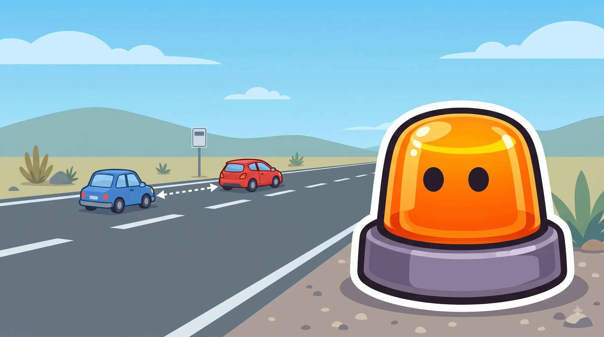
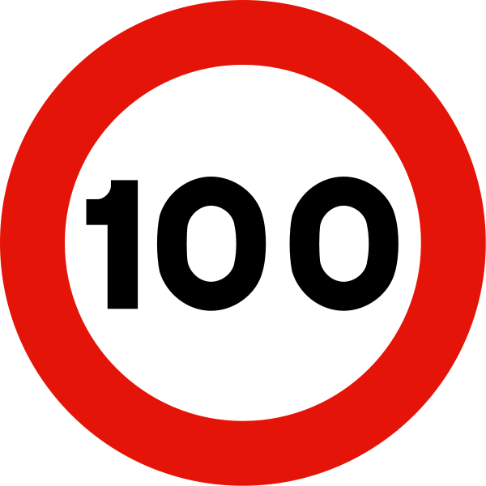
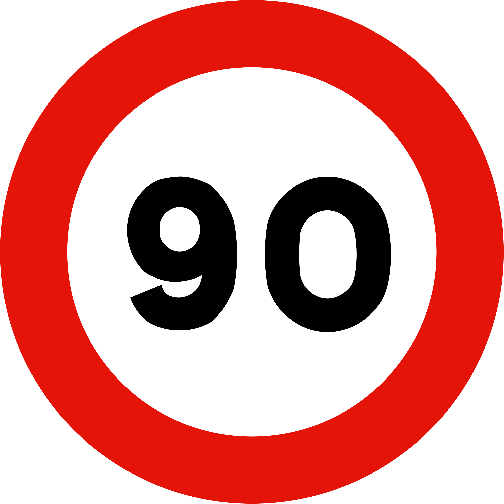
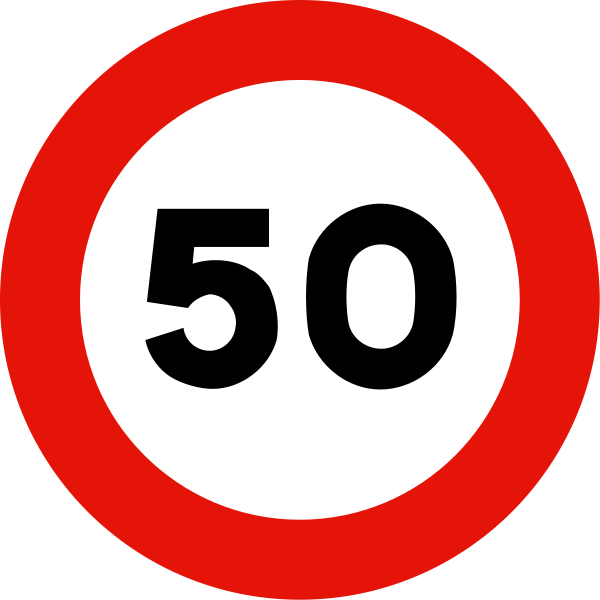
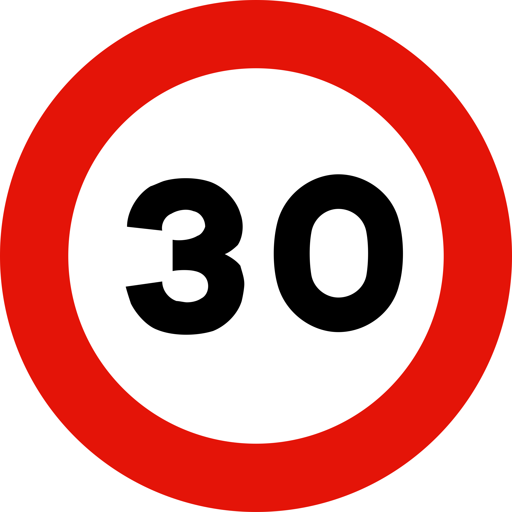
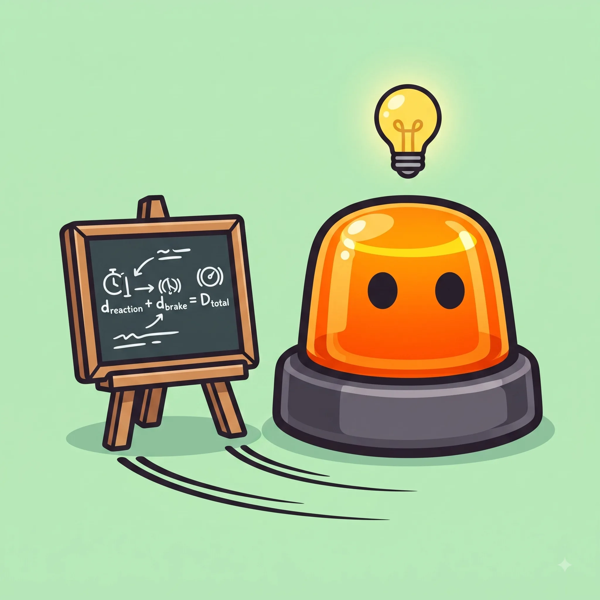

Velocidad y distancias de seguridad
A más velocidad, la frenada crece mucho más rápido que la reacción.
Esquema





Distancia de seguridad vs distancia de detención
Distancia de seguridad
El hueco que TÚ dejas
Distancia de detención
Lo que el coche REALMENTE recorre
| Distancia de seguridad | Distancia de detención | |
|---|---|---|
| ¿Qué es? | El hueco que dejas con el coche de delante | Lo que recorres desde que ves el peligro hasta pararte |
| ¿De qué depende? | Velocidad y tiempo de reacción | Reacción + frenada (velocidad, firme, neumáticos) |
| Regla rápida | Regla de los 2 segundos (3 si llueve/noche) | Al doblar la velocidad, la frenada x4 |
La regla del examen para calcular distancias
Fórmula simplificada para razonar el examen, no la física exacta de tu coche.
Trucos para no olvidarlo
A 90 km/h frenas casi un campo de fútbol entero.
Reaccionar + frenar en seco a 90 km/h son unos 108 metros. A 120 km/h, casi el doble: 180 metros.
"Mil uno, mil dos" y ya lo sabes.
Cuenta desde que el coche de delante pasa un punto fijo. Si llegas antes de "mil dos", vas muy cerca.
Con lluvia, todo se multiplica.
El firme mojado puede doblar la frenada. Cuenta 3 segundos, no 2.
Confusiones típicas

Ponte a prueba
Otros temas
Señales verticales
La forma y el color ya te dicen el mensaje antes de leer nada.
Señales horizontales y marcas viales
Líneas, flechas y símbolos pintados en el asfalto, con su propio código.
Normas generales de circulación
Las reglas base que deciden por ti cuando no hay ninguna señal.
Adelantamientos
Cuándo, cómo y dónde se puede adelantar con seguridad.
Intersecciones y prioridad de paso
Quién pasa primero en cruces y glorietas.
Autopistas y autovías
Incorporaciones, carriles y normas específicas de vías rápidas.
Alcohol, drogas y fatiga
Tasas máximas y por qué te la juegas más de lo que crees.
El vehículo: mantenimiento y elementos de seguridad
Lo mínimo que debes revisar antes de coger el coche.
Accidentes: actuación y primeros auxilios
Proteger, avisar y socorrer, en ese orden.
Sanciones y puntos del carnet
Cómo funciona el sistema de puntos y qué te los quita.
Casos especiales: ciclistas, peatones, animales y meteorología
Las situaciones que no siguen la norma "de manual".